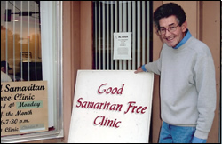
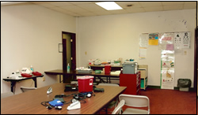

Become a Member Clinic
Research indicates a funded administrative core is crucial to the success of volunteer-based initiatives, such as free medical clinics. The FCI Central Office provides both executive/administative and clinical support for Iowa's free clinics. Through the central office, FCI provides the essential elements of operations such as insurance, accounting, tax filing, marketing, technology, volunteer application processing, education, meeting facilitation, office supplies, medical supplies and resources.
Our thinking is; if we are able to generate support to ease the administrative burden off of community free medical clinics, support generated locally can be utilized toward direct patient service delivery at the free clinic site, which is and should remain our member clinic’s number one priority.
We believe there is strength in numbers – in terms of collaboration, education, awareness and impact.
Benefits/Services
Free Clinics of Iowa meets the needs of member clinics, regardless of where they are in their development.
FCI provides assistance to community leaders in establishing new clinics, provides existing clinics with essential resources/templates for day-to-day operations and offers continual opportunities for education and collaboration with other free clinic leaders throughout Iowa.
Getting Started
- Assistance in facilitating stakeholder meetings within member clinic communities to establish support and awareness of free clinic initiation
- Assistance and templates for entering into Lease arrangements with the hosting site
- Assistance in establishing a member clinic Advisory Board/Council, if appropriate
- Assistance to establish member clinic bank accounts (If clinic chooses to join under the Free Clinics of Iowa 501c3 umbrella)
Operational Support
- Standard FCI organizational forms, policies and procedures for day-to-day operation
- Standard FCI volunteer applications, forms & links to optimize volunteer recruitment process
- Provide volunteer background checks for criminal, child abuse and adult dependent abuse records
- Maintain a master database of all member clinic volunteers and routinely verify all volunteers have an active, unrestricted license to practice in Iowa AND current malpractice coverage through the VHCPP or another means
- Under the IRS, 501c3, tax-exempt status of the organization, all donations and contributions are tax-deductible to the donor
- Standard FCI organizational thank you cards/receipts, expense reports & deposit reports, specifically designed to optimize year-end tax filing process
- Standard script pad acquisition
- Provide general accounting and tax filing services (If clinic chooses to join under the Free Clinics of Iowa 501c3 umbrella)
- Provide insurance coverage for property, general liability, professional liability and medical malpractice, where the State’s VHCPP does not provide coverage
- Assistance in understanding and utilizing the VHCPP, Iowa Immunization Programs or any other State program related to the operation of free clinics or services provided by free clinics
- Provide a technology workstation to every clinic member including; laptop, laptop case, all-in-one printer/copy/scan/fax machine, label printer, shredder, surge protector, software, 1st year anti-virus protection and training to utilize such workstation
- Provide marketing materials such as; custom flash/power point presentation, signage, flyers, brochures, banners, letterhead, envelopes, blank thank you cards, etc.
Collaborative Opportunities
- Facilitate continuing education opportunities for volunteer clinic leadership (ie: Volunteer Recruitment, Retention and Recognition)
- Facilitate FCI Membership meetings approximately two times per year, focused on improving the day-to-day operations of member clinics
- Facilitate collaborative and networking opportunities among member clinics
- Fundraising initiatives facilitated by FCI Administrative Office for support of member clinic operations
- Acquisition and Distribution of donated equipment and supplies to member clinics
- Through buying in bulk, pursuit of discounted pricing on equipment and supplies
- Advocacy on behalf of member free clinics to the media, legislative, business and civic leadership
- Continuous free clinic operation updates and communication to member clinics provided through FCI Central Office memberships, publications and/or participation in various stakeholder groups.
- On-going FCI member e-news distributions and development of a FCI Annual print piece for utilization by all members
Eligibility
Member clinics must comply with the State of Iowa’s definition of a Free Clinic:
“Free Clinic” means a facility, other than a hospital or health care provider’s office which is exempt from taxation under section 501(c)(3) of the Internal Revenue Code and which has as its sole purpose the provision of health care services without charge to individuals who are otherwise unable to pay for the services. (Source: IA Code: 135.24)
Member Responsibilities
- Enter into a contractual agreement with Free Clinics of Iowa
- Adhere to the FCI Mission Statement
- Identify and Appoint a Volunteer Clinic Manager and a Volunteer Medical Director
- Clearly identify member clinic as part of Free Clinics of Iowa in print or any other means of media
- Display signage recognizing membership within Free Clinics of Iowa
- Encourage utilization of Free Clinics of Iowa marketing and print materials
- Encourage utilization of Free Clinics of Iowa templates/forms in clinic operation and reporting
- If member clinic chooses to join under the umbrella of the FCI 501c3 status: Track and submit expense and deposit records for general accounting and tax filing services.
- Track and submit volunteer reports for data collection, insurance purposes and verification of active, unrestricted licensure in the State & of Iowa
- Track and submit patient visit reports for accurate data collection regarding services & impact of free clinics within the State of Iowa
Membership Types
“Full Member”: Are eligible to receive all benefits/services as listed AND operate under the 501(c)(3) Not-For-Profit status of Free Clinics of Iowa.
“Affiliate Member”: Are eligible to receive all benefits/services as listed with the exception of financial oversight, financial statement development and tax filing services. FCI Affiliate Members operate under their own or their host site’s 501(c)(3) Not-For-Profit status.
“Associate Member”: Receive all benefits/services pertaining to collaboration, networking and learning opportunities.
Dues & Fees
As free clinics are limited in resources and operate through the efforts of volunteers, it is important to note that there are no membership fees associated with FCI and no administrative charges to FCI member clinics.
Photos
- 
Good Samaritan Free Clinic: Knoxville
- 
Margaret Cramer Clinic: Des Moines

Grace United Methodist Church Free Clinic: Des Moines